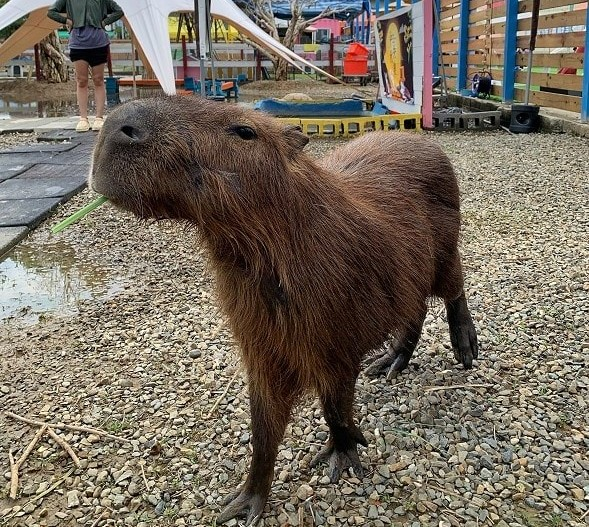
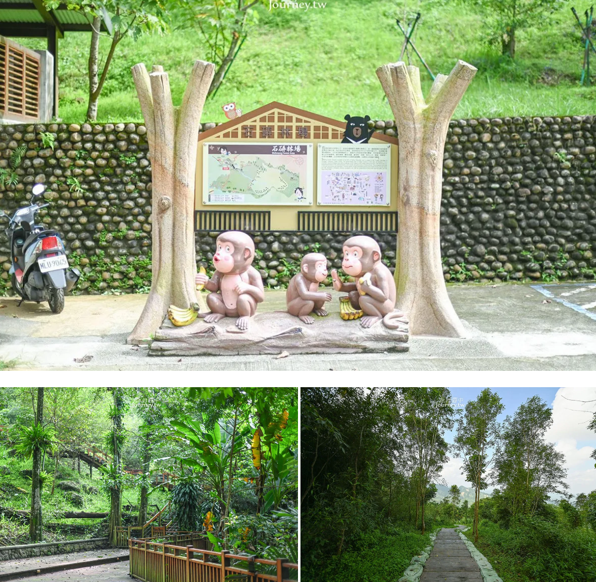
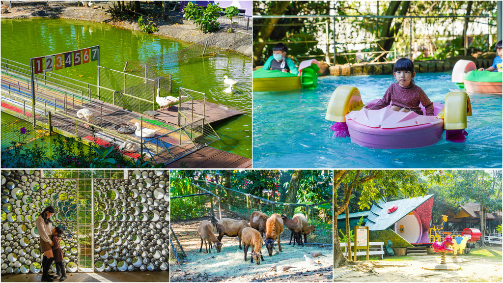

❤️❤️❤️萌寵村親子樂園❤️❤️❤️

嘉義新開幕親子景點，「萌寵村親子樂園」，離中埔交流道開車約8分鐘，要前往阿里山也會經過，可以安排順遊。 園區裡分為遊戲區、動物區和室內區，遊戲區有人力海盜船、射箭、釣魚和坑爹飛車，不用額外花錢都能暢玩。 動物區有梅花鹿、陸龜、水豚君、羊和羊駝等，種類滿多，又沒有便便臭味。 室內則有娃娃機、彈珠檯，門票也可以在這裡抵用餐點。 園區設施完善，動物可愛，一票玩到底，可以搭配中埔景點或是上阿里山前順道來玩。
🌳🌳🌳石硦林場🌳🌳🌳

位於阿里山下的石硦林場過去是在地人生活的場域，現在經過整理後成為登山健行旅客的秘境之地。 旅客可以從山腰處的入口沿著步道穿越山林，慢慢爬上了中埔鄉的桶頭山，站上全新修建的展望台，一眺美麗的嘉義風景。 走在寬達30餘公頃的森林之中，即便是夏天也使人感受到沁涼。而森林在光合作用下，吐納出的清新的空氣，讓人走在充滿自然環境的生態之中， 心情也為之療癒。沿途還有各種豐富的林相植物相隨，幸運的話還能遇見五色鳥等保育類的鳥類， 是一條相當簡單、親民、好走的山林步道。
🐮🐮🐮粉牛樂園🐮🐮🐮

綠盈牧場是嘉義中埔知名牧場，2023年重新整修後於1/14開放，並更名為「粉牛樂園」 門票便宜設施又多口碑相當好，必訪嘉義景點之一，綠盈牧場內飼養牛、羊、兔子、馬等動物， 特色設施則有牽牛花溜滑梯、鎖教堂及賞蝶屋， 假日還有賽鵝跟擠ㄋㄟㄋㄟ體驗，為IG拍照景點，是個全家大小都很適合遊玩的景點。